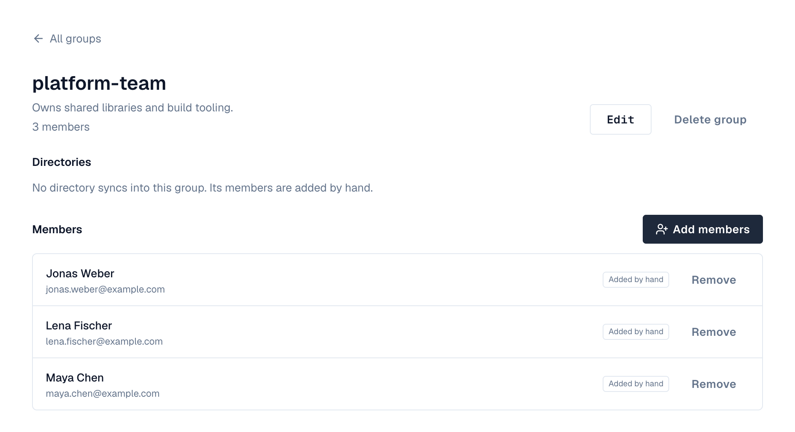
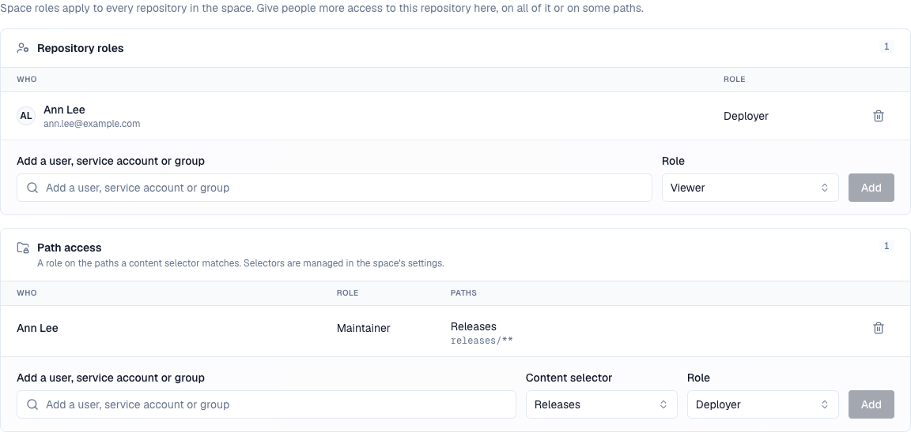

Who can do what in Depotex is decided in layers. A directory brings in the account, the account's system role decides what it may do across the installation, and space roles and repository roles decide what it may do with packages. Groups let you hand out space and repository roles to many people at once. This page shows how the layers combine; each one has its own page with the details.
1. The layers
Directory Local · Delegated · LDAP · Active Directory · SCIM · Entra ID · Google Workspace
└─ User account one per person (the highest directory wins when several have them)
├─ System role Member · Organization admin · Super admin → what the account may do in Settings
├─ Groups added by hand, or synced from the directory → carry space and repository roles
└─ Space role Viewer · Developer · Maintainer · Owner → every repository in the space
└─ Repository role Viewer · Deployer · Maintainer · Admin → one repository
└─ Path access a repository role on a content selector's paths| Layer | Decides | Set in | Details |
|---|---|---|---|
| Directory | Where the account comes from and how the person signs in | Settings → Directories | Users & directories |
| System role | What the account may do across the installation: settings, people, policies | Settings → Users → a user → Change role | Actions on a user |
| Group | A set of people who get the same space and repository roles | Settings → Groups, or the directory | Groups |
| Space role | What someone may do in every repository of a space | A space → Members | Spaces: roles |
| Repository role | More access on one repository, or on some of its paths | A repository → Access | Repository access |
2. Directories and accounts
- Every account belongs to exactly one directory. Local accounts have Depotex passwords; Delegated accounts sign in with single sign-on; LDAP, Active Directory, SCIM, Microsoft Entra ID and Google Workspace accounts are created, changed and disabled by the directory, not in Depotex.
- When the same person (same email or username) has an account in several directories, only the one in the highest directory is used; the others are shadowed. See Directory order.
- A directory recognizes its accounts by their immutable ID, so renaming someone or changing their email in the directory updates the same Depotex account, keeping their roles and groups.
- Directories need a license: Local and Delegated on every tier, LDAP and Active Directory on Pro, SCIM, Entra ID and Google Workspace on Enterprise.
3. System roles
Every account has one system role. Each includes what the one before it can do:
| System role | Can | How someone gets it |
|---|---|---|
| Member | Sign in, use the spaces and repositories their space and repository roles allow, see people and groups of their organization, create their own API tokens. No Settings area | The default for everyone, including every account a directory syncs or provisions |
| Organization admin | Also the Settings area for their organization: users, groups, policies, automation and organization-level settings | Given by an organization admin or super admin; or set as Role for new accounts for accounts single sign-on creates |
| Super admin | Everything: installation settings, license, storage, backups, plugins, every organization, every space and repository. Only super admins create spaces | The first administrator (setup wizard), and anyone another super admin promotes |
- You can only give a role up to your own, and never change your own. Organization admins can't act on super admins.
- A directory never grants an admin role. Synced and provisioned accounts start as Member, and a directory can't make anyone a super admin; promote people by hand in Settings → Users. Single sign-on can create accounts as Member or Organization admin, never Super admin.
- What each system role can do is fixed by Depotex (each feature's page names the permission it checks); it isn't edited per installation. Fine-grained access to packages comes from space and repository roles instead.
Keep the number of super admins small and review them regularly; see Security hardening.
4. Groups
A group is a named set of people in your organization. Groups don't change anyone's system role: they exist to give space roles and repository roles to many people at once, and to keep that access in step with your directory.

- Hand-made groups: create one in Settings → Groups and add people from any directory.
- Synced groups: LDAP, Active Directory, SCIM, Entra ID and Google Workspace bring their groups in. A synced group with the same name as an existing group (ignoring upper and lower case) is merged into it, so Platform from Active Directory and platform from SCIM become one group.
- Nested groups: Depotex groups are flat (a group can't contain a group). For Active Directory and LDAP, Include members of nested groups (on by default) counts the members of groups inside a directory group as its members, so the hierarchy in your directory is flattened into the Depotex group.
- Members from the directory are managed there. Sync adds and removes them; members added by hand stay until you remove them. A group is never deleted by sync.
These are groups of people. A repository group is something else: one address that combines several repositories of a format.
5. Space roles
A space role applies to every repository in the space. It can be given to a person, a group or a service account, on the space's Members tab (space owners and super admins).
| Space role | Can |
|---|---|
| Viewer | Browse the space and download |
| Developer | Also publish new artifacts and upload application SBOMs |
| Maintainer | Also delete and overwrite artifacts, release quarantined versions, manage repositories, upload and cleanup policies and the block list |
| Owner | Also manage members and settings, and delete the space |
- When someone has several roles in a space (their own and their groups'), the highest one counts.
- An internal space can be read by everyone who signs in to the organization, a public one also anonymously; publishing always needs Developer or higher. See Visibility.
- Removing a person from Members leaves the roles they have through groups.
6. Repository roles and path access
A repository's Access tab gives a person, group or service account more access on that one repository, or only on the paths a content selector matches (for example publish only under com/acme/team-x/**).

- Repository roles are Viewer (browse and download), Deployer (also publish), Maintainer (also overwrite and delete) and Admin (also settings and access).
- Access only ever adds: a repository role can give more than the space role, never less. To keep someone out of a repository, don't give them a space role; give the repositories they need instead.
- People with only repository access see the space with just those repositories.
7. Service accounts and tokens
- A service account is a non-human account for CI and integrations. It gets space and repository roles like a person; see Service accounts.
- An API token never gives more than its owner has: it carries a list of permissions and works only where the owner's roles allow them. See API tokens.
- Policies can limit what is allowed on top of roles (for example sign-in only from some networks, or API tokens that must expire); see Policies.
8. Example: give a team access from Active Directory
The platform team is the AD group Platform (with nested groups for each squad). They should publish to their own space and read the shared thirdparty space; only the release managers may publish to releases.
- Sync the directory — Add an Active Directory directory with the group base DN and Include members of nested groups on (Setting up an Active Directory directory). After the first sync, Settings → Groups has Platform with every squad member in it.
- Give the space role — Open the space platform → Members, add the group Platform with Developer. Everyone in the group can now publish to every repository in the space.
- Give read access elsewhere — Open the space thirdparty → Members and add Platform as Viewer.
- Narrow one repository — For the release repository, don't rely on the space role: make a hand-made group Release managers, and on releases → Access give it Deployer. (If developers shouldn't publish there at all, keep releases in a space where Platform is only Viewer, because repository roles can't take away what a space role gives.)
- Admins — Promote the team lead to Organization admin in Settings → Users if they should manage people and policies. The directory never does this for you.
- Check — Open a user's page: Overview lists their groups; a space's Members shows who has access and through which group.
When someone joins or leaves Platform in Active Directory, the next sync adds or removes them, and with them every space and repository role the group carries.